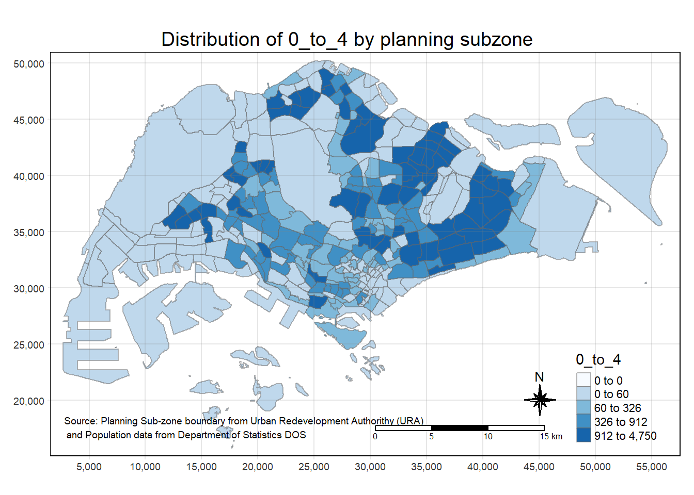

pacman::p_load(sf, tmap, tidyverse, dplyr)In Class Exercise 2: Working with Master Plan Planning Sub-zone Data
1.0 Introduction
2.0 Setup and Requirements
3.0 Importing the Data Sets.
3.1 Importing 2014 SHPZ File
- Go to data.gov.sg and download the 2014 Master Subzone SHP and KML File
- Import and read the SHP and KML File in R.
We can use the st_read function to import the data.
mpsz <- st_read(dsn = "data/geospatial", layer = "MP14_SUBZONE_WEB_PL")Reading layer `MP14_SUBZONE_WEB_PL' from data source
`C:\Users\jiale\Desktop\IS415\IS415-GAA\In_Class_Exercises\In_Class_Exercise_2\data\geospatial'
using driver `ESRI Shapefile'
Simple feature collection with 323 features and 15 fields
Geometry type: MULTIPOLYGON
Dimension: XY
Bounding box: xmin: 2667.538 ymin: 15748.72 xmax: 56396.44 ymax: 50256.33
Projected CRS: SVY21Similarly we can use the st_read function to import the data.
mspz_kml <- st_read("data/geospatial/MasterPlan2014SubzoneBoundaryWebKML.kml")Error: Cannot open "C:\Users\jiale\Desktop\IS415\IS415-GAA\In_Class_Exercises\In_Class_Exercise_2\data\geospatial\MasterPlan2014SubzoneBoundaryWebKML.kml"; The source could be corrupt or not supported. See `st_drivers()` for a list of supported formats.However, the data on data.gov.sg is corrupted. Hence we will do a workaround, where we can create a new kml file base on the shp file and read it.
Step 1: using the st_write to create a kml file from the shapefile
Step 2: using the st_read function to read the generated kml file.
st_write(mpsz, "data/geospatial/MP14_SUBZONE_WEB_PL.kml", driver = "KML")Layer MP14_SUBZONE_WEB_PL in dataset data/geospatial/MP14_SUBZONE_WEB_PL.kml already exists:
use either append=TRUE to append to layer or append=FALSE to overwrite layerError in eval(expr, envir, enclos): Dataset already exists.mpsz_kml <- st_read("data/geospatial/MP14_SUBZONE_WEB_PL.kml")Reading layer `MP14_SUBZONE_WEB_PL' from data source
`C:\Users\jiale\Desktop\IS415\IS415-GAA\In_Class_Exercises\In_Class_Exercise_2\data\geospatial\MP14_SUBZONE_WEB_PL.kml'
using driver `KML'
Simple feature collection with 323 features and 2 fields
Geometry type: MULTIPOLYGON
Dimension: XY
Bounding box: xmin: 103.6057 ymin: 1.158699 xmax: 104.0885 ymax: 1.470775
Geodetic CRS: WGS 843.2 Importing 2019 SHPZ File
- Go to data.gov.sg and download the 2019 KML File
- Import and read the KML File in R.
mpsz19_shp <- st_read(dsn = "data/geospatial", layer = "MPSZ-2019")Reading layer `MPSZ-2019' from data source
`C:\Users\jiale\Desktop\IS415\IS415-GAA\In_Class_Exercises\In_Class_Exercise_2\data\geospatial'
using driver `ESRI Shapefile'
Simple feature collection with 332 features and 6 fields
Geometry type: MULTIPOLYGON
Dimension: XY
Bounding box: xmin: 103.6057 ymin: 1.158699 xmax: 104.0885 ymax: 1.470775
Geodetic CRS: WGS 84mpsz19_kml <- st_read("data/geospatial/MasterPlan2019SubzoneBoundaryNoSeaKML.kml")Reading layer `URA_MP19_SUBZONE_NO_SEA_PL' from data source
`C:\Users\jiale\Desktop\IS415\IS415-GAA\In_Class_Exercises\In_Class_Exercise_2\data\geospatial\MasterPlan2019SubzoneBoundaryNoSeaKML.kml'
using driver `KML'
Simple feature collection with 332 features and 2 fields
Geometry type: MULTIPOLYGON
Dimension: XY, XYZ
Bounding box: xmin: 103.6057 ymin: 1.158699 xmax: 104.0885 ymax: 1.470775
z_range: zmin: 0 zmax: 0
Geodetic CRS: WGS 843.3 Comparison the difference between SHP and KML File and formatting the CRS.
3.3.1 Understanding SHP and KML Files
Use glimpse() and head() to compare the attributes available in each file. For instance, SHP files might have more detailed attribute tables with multiple fields, while KML files are more streamlined with fewer attributes.
glimpse(mpsz19_shp)Rows: 332
Columns: 7
$ SUBZONE_N <chr> "MARINA EAST", "INSTITUTION HILL", "ROBERTSON QUAY", "JURON…
$ SUBZONE_C <chr> "MESZ01", "RVSZ05", "SRSZ01", "WISZ01", "MUSZ02", "MPSZ05",…
$ PLN_AREA_N <chr> "MARINA EAST", "RIVER VALLEY", "SINGAPORE RIVER", "WESTERN …
$ PLN_AREA_C <chr> "ME", "RV", "SR", "WI", "MU", "MP", "WI", "WI", "SI", "SI",…
$ REGION_N <chr> "CENTRAL REGION", "CENTRAL REGION", "CENTRAL REGION", "WEST…
$ REGION_C <chr> "CR", "CR", "CR", "WR", "CR", "CR", "WR", "WR", "CR", "CR",…
$ geometry <MULTIPOLYGON [°]> MULTIPOLYGON (((103.8802 1...., MULTIPOLYGON (…head(mpsz19_shp)Simple feature collection with 6 features and 6 fields
Geometry type: MULTIPOLYGON
Dimension: XY
Bounding box: xmin: 103.6537 ymin: 1.216215 xmax: 103.8988 ymax: 1.297462
Geodetic CRS: WGS 84
SUBZONE_N SUBZONE_C PLN_AREA_N PLN_AREA_C REGION_N
1 MARINA EAST MESZ01 MARINA EAST ME CENTRAL REGION
2 INSTITUTION HILL RVSZ05 RIVER VALLEY RV CENTRAL REGION
3 ROBERTSON QUAY SRSZ01 SINGAPORE RIVER SR CENTRAL REGION
4 JURONG ISLAND AND BUKOM WISZ01 WESTERN ISLANDS WI WEST REGION
5 FORT CANNING MUSZ02 MUSEUM MU CENTRAL REGION
6 MARINA EAST (MP) MPSZ05 MARINE PARADE MP CENTRAL REGION
REGION_C geometry
1 CR MULTIPOLYGON (((103.8802 1....
2 CR MULTIPOLYGON (((103.8376 1....
3 CR MULTIPOLYGON (((103.8341 1....
4 WR MULTIPOLYGON (((103.7125 1....
5 CR MULTIPOLYGON (((103.8472 1....
6 CR MULTIPOLYGON (((103.8987 1....glimpse(mpsz19_kml)Rows: 332
Columns: 3
$ Name <chr> "kml_1", "kml_2", "kml_3", "kml_4", "kml_5", "kml_6", "kml…
$ Description <chr> "<center><table><tr><th colspan='2' align='center'><em>Att…
$ geometry <MULTIPOLYGON [°]> MULTIPOLYGON Z (((103.8145 ..., MULTIPOLYGON …head(mpsz19_kml)Simple feature collection with 6 features and 2 fields
Geometry type: MULTIPOLYGON
Dimension: XYZ
Bounding box: xmin: 103.8013 ymin: 1.274155 xmax: 103.8532 ymax: 1.286517
z_range: zmin: 0 zmax: 0
Geodetic CRS: WGS 84
Name
1 kml_1
2 kml_2
3 kml_3
4 kml_4
5 kml_5
6 kml_6
Description
1 <center><table><tr><th colspan='2' align='center'><em>Attributes</em></th></tr><tr bgcolor="#E3E3F3"> <th>SUBZONE_NO</th> <td>12</td> </tr><tr bgcolor=""> <th>SUBZONE_N</th> <td>DEPOT ROAD</td> </tr><tr bgcolor="#E3E3F3"> <th>SUBZONE_C</th> <td>BMSZ12</td> </tr><tr bgcolor=""> <th>CA_IND</th> <td>N</td> </tr><tr bgcolor="#E3E3F3"> <th>PLN_AREA_N</th> <td>BUKIT MERAH</td> </tr><tr bgcolor=""> <th>PLN_AREA_C</th> <td>BM</td> </tr><tr bgcolor="#E3E3F3"> <th>REGION_N</th> <td>CENTRAL REGION</td> </tr><tr bgcolor=""> <th>REGION_C</th> <td>CR</td> </tr><tr bgcolor="#E3E3F3"> <th>INC_CRC</th> <td>C22DED671DE2A940</td> </tr><tr bgcolor=""> <th>FMEL_UPD_D</th> <td>20191223152313</td> </tr></table></center>
2 <center><table><tr><th colspan='2' align='center'><em>Attributes</em></th></tr><tr bgcolor="#E3E3F3"> <th>SUBZONE_NO</th> <td>2</td> </tr><tr bgcolor=""> <th>SUBZONE_N</th> <td>BUKIT MERAH</td> </tr><tr bgcolor="#E3E3F3"> <th>SUBZONE_C</th> <td>BMSZ02</td> </tr><tr bgcolor=""> <th>CA_IND</th> <td>N</td> </tr><tr bgcolor="#E3E3F3"> <th>PLN_AREA_N</th> <td>BUKIT MERAH</td> </tr><tr bgcolor=""> <th>PLN_AREA_C</th> <td>BM</td> </tr><tr bgcolor="#E3E3F3"> <th>REGION_N</th> <td>CENTRAL REGION</td> </tr><tr bgcolor=""> <th>REGION_C</th> <td>CR</td> </tr><tr bgcolor="#E3E3F3"> <th>INC_CRC</th> <td>085EF219A5A1AEAD</td> </tr><tr bgcolor=""> <th>FMEL_UPD_D</th> <td>20191223152313</td> </tr></table></center>
3 <center><table><tr><th colspan='2' align='center'><em>Attributes</em></th></tr><tr bgcolor="#E3E3F3"> <th>SUBZONE_NO</th> <td>3</td> </tr><tr bgcolor=""> <th>SUBZONE_N</th> <td>CHINATOWN</td> </tr><tr bgcolor="#E3E3F3"> <th>SUBZONE_C</th> <td>OTSZ03</td> </tr><tr bgcolor=""> <th>CA_IND</th> <td>Y</td> </tr><tr bgcolor="#E3E3F3"> <th>PLN_AREA_N</th> <td>OUTRAM</td> </tr><tr bgcolor=""> <th>PLN_AREA_C</th> <td>OT</td> </tr><tr bgcolor="#E3E3F3"> <th>REGION_N</th> <td>CENTRAL REGION</td> </tr><tr bgcolor=""> <th>REGION_C</th> <td>CR</td> </tr><tr bgcolor="#E3E3F3"> <th>INC_CRC</th> <td>EF2B9A91AF49E025</td> </tr><tr bgcolor=""> <th>FMEL_UPD_D</th> <td>20191223152313</td> </tr></table></center>
4 <center><table><tr><th colspan='2' align='center'><em>Attributes</em></th></tr><tr bgcolor="#E3E3F3"> <th>SUBZONE_NO</th> <td>4</td> </tr><tr bgcolor=""> <th>SUBZONE_N</th> <td>PHILLIP</td> </tr><tr bgcolor="#E3E3F3"> <th>SUBZONE_C</th> <td>DTSZ04</td> </tr><tr bgcolor=""> <th>CA_IND</th> <td>Y</td> </tr><tr bgcolor="#E3E3F3"> <th>PLN_AREA_N</th> <td>DOWNTOWN CORE</td> </tr><tr bgcolor=""> <th>PLN_AREA_C</th> <td>DT</td> </tr><tr bgcolor="#E3E3F3"> <th>REGION_N</th> <td>CENTRAL REGION</td> </tr><tr bgcolor=""> <th>REGION_C</th> <td>CR</td> </tr><tr bgcolor="#E3E3F3"> <th>INC_CRC</th> <td>615D4EDDEF809F8E</td> </tr><tr bgcolor=""> <th>FMEL_UPD_D</th> <td>20191223152313</td> </tr></table></center>
5 <center><table><tr><th colspan='2' align='center'><em>Attributes</em></th></tr><tr bgcolor="#E3E3F3"> <th>SUBZONE_NO</th> <td>5</td> </tr><tr bgcolor=""> <th>SUBZONE_N</th> <td>RAFFLES PLACE</td> </tr><tr bgcolor="#E3E3F3"> <th>SUBZONE_C</th> <td>DTSZ05</td> </tr><tr bgcolor=""> <th>CA_IND</th> <td>Y</td> </tr><tr bgcolor="#E3E3F3"> <th>PLN_AREA_N</th> <td>DOWNTOWN CORE</td> </tr><tr bgcolor=""> <th>PLN_AREA_C</th> <td>DT</td> </tr><tr bgcolor="#E3E3F3"> <th>REGION_N</th> <td>CENTRAL REGION</td> </tr><tr bgcolor=""> <th>REGION_C</th> <td>CR</td> </tr><tr bgcolor="#E3E3F3"> <th>INC_CRC</th> <td>72107B11807074F4</td> </tr><tr bgcolor=""> <th>FMEL_UPD_D</th> <td>20191223152313</td> </tr></table></center>
6 <center><table><tr><th colspan='2' align='center'><em>Attributes</em></th></tr><tr bgcolor="#E3E3F3"> <th>SUBZONE_NO</th> <td>4</td> </tr><tr bgcolor=""> <th>SUBZONE_N</th> <td>CHINA SQUARE</td> </tr><tr bgcolor="#E3E3F3"> <th>SUBZONE_C</th> <td>OTSZ04</td> </tr><tr bgcolor=""> <th>CA_IND</th> <td>Y</td> </tr><tr bgcolor="#E3E3F3"> <th>PLN_AREA_N</th> <td>OUTRAM</td> </tr><tr bgcolor=""> <th>PLN_AREA_C</th> <td>OT</td> </tr><tr bgcolor="#E3E3F3"> <th>REGION_N</th> <td>CENTRAL REGION</td> </tr><tr bgcolor=""> <th>REGION_C</th> <td>CR</td> </tr><tr bgcolor="#E3E3F3"> <th>INC_CRC</th> <td>B609DF5587626C8F</td> </tr><tr bgcolor=""> <th>FMEL_UPD_D</th> <td>20191223152313</td> </tr></table></center>
geometry
1 MULTIPOLYGON Z (((103.8145 ...
2 MULTIPOLYGON Z (((103.8221 ...
3 MULTIPOLYGON Z (((103.8438 ...
4 MULTIPOLYGON Z (((103.8496 ...
5 MULTIPOLYGON Z (((103.8525 ...
6 MULTIPOLYGON Z (((103.8486 ...SHP vs. KML: Key Differences
Summary Table:
| Property | SHP (Shapefile) | KML (Keyhole Markup Language) |
|---|---|---|
| File Structure | Multiple files for geometries and attributes | Single file for visualization |
| Attributes | Detailed, diverse data types | Limited, mostly descriptive |
| Geometry Types | Complex, suited for GIS analysis | Basic, suited for display |
| CRS Information | Explicit and configurable (e.g., EPSG:3414) | Typically defaults to WGS84 |
| Usage Context | GIS analysis, mapping | Web-based visualization |
| Performance | Slower with large datasets | Lightweight and quick for display |
3.3.2 CRS (Coordinate Reference System)
SHP File CRS: Shapefiles often come with a defined CRS. In this case, we ensure that it is aligned with Singapore’s local system (EPSG:3414).
KML File CRS: KML files typically default to WGS84 (EPSG:4326), which is used in web applications and is latitude/longitude-based.
How to know which CRS to use ? We can simply go to epsg.io to check https://epsg.io/?q=singapore
st_crs(mpsz19_shp)Coordinate Reference System:
User input: WGS 84
wkt:
GEOGCRS["WGS 84",
DATUM["World Geodetic System 1984",
ELLIPSOID["WGS 84",6378137,298.257223563,
LENGTHUNIT["metre",1]]],
PRIMEM["Greenwich",0,
ANGLEUNIT["degree",0.0174532925199433]],
CS[ellipsoidal,2],
AXIS["latitude",north,
ORDER[1],
ANGLEUNIT["degree",0.0174532925199433]],
AXIS["longitude",east,
ORDER[2],
ANGLEUNIT["degree",0.0174532925199433]],
ID["EPSG",4326]]mpsz19_shp_crs3414 <- st_read(dsn = "data/geospatial", layer = "MPSZ-2019") %>%
st_transform(crs = 3414)Reading layer `MPSZ-2019' from data source
`C:\Users\jiale\Desktop\IS415\IS415-GAA\In_Class_Exercises\In_Class_Exercise_2\data\geospatial'
using driver `ESRI Shapefile'
Simple feature collection with 332 features and 6 fields
Geometry type: MULTIPOLYGON
Dimension: XY
Bounding box: xmin: 103.6057 ymin: 1.158699 xmax: 104.0885 ymax: 1.470775
Geodetic CRS: WGS 84st_crs(mpsz19_shp_crs3414)Coordinate Reference System:
User input: EPSG:3414
wkt:
PROJCRS["SVY21 / Singapore TM",
BASEGEOGCRS["SVY21",
DATUM["SVY21",
ELLIPSOID["WGS 84",6378137,298.257223563,
LENGTHUNIT["metre",1]]],
PRIMEM["Greenwich",0,
ANGLEUNIT["degree",0.0174532925199433]],
ID["EPSG",4757]],
CONVERSION["Singapore Transverse Mercator",
METHOD["Transverse Mercator",
ID["EPSG",9807]],
PARAMETER["Latitude of natural origin",1.36666666666667,
ANGLEUNIT["degree",0.0174532925199433],
ID["EPSG",8801]],
PARAMETER["Longitude of natural origin",103.833333333333,
ANGLEUNIT["degree",0.0174532925199433],
ID["EPSG",8802]],
PARAMETER["Scale factor at natural origin",1,
SCALEUNIT["unity",1],
ID["EPSG",8805]],
PARAMETER["False easting",28001.642,
LENGTHUNIT["metre",1],
ID["EPSG",8806]],
PARAMETER["False northing",38744.572,
LENGTHUNIT["metre",1],
ID["EPSG",8807]]],
CS[Cartesian,2],
AXIS["northing (N)",north,
ORDER[1],
LENGTHUNIT["metre",1]],
AXIS["easting (E)",east,
ORDER[2],
LENGTHUNIT["metre",1]],
USAGE[
SCOPE["Cadastre, engineering survey, topographic mapping."],
AREA["Singapore - onshore and offshore."],
BBOX[1.13,103.59,1.47,104.07]],
ID["EPSG",3414]]4.0 Working with Population Data
4.1 Import and Simple Data Transformation
Go toSingStat Website and download 2023’s dataset for our popuplation data. We then group them by age and subzone
popdata <- read_csv("data/respopagesextod2023.csv")
popdata2023 <- popdata %>%
group_by(PA, SZ, AG) %>% # Ensure data is grouped by 'AG' if needed
summarise(POP = sum(Pop, na.rm = TRUE)) %>% # Summarise population
pivot_wider(names_from = AG, values_from = POP) %>% # Pivot to wider format
ungroup() # Ungroup the data
# Check the column names
colnames(popdata2023) [1] "PA" "SZ" "0_to_4" "10_to_14" "15_to_19"
[6] "20_to_24" "25_to_29" "30_to_34" "35_to_39" "40_to_44"
[11] "45_to_49" "50_to_54" "55_to_59" "5_to_9" "60_to_64"
[16] "65_to_69" "70_to_74" "75_to_79" "80_to_84" "85_to_89"
[21] "90_and_Over"4.2 Simply join the data and then map it out
4.2.1 Join the data
popdata2023 <- popdata2023 %>%
mutate_at(.vars = vars(PA, SZ),
.funs = list(toupper))
#Step 5: Merge the spatial data with the population data
mpsz_pop2020 <- left_join(mpsz19_shp_crs3414, popdata2023,
by = c("SUBZONE_N" = "SZ"))4.2.2 Plot the map
tmap_mode("plot")
tm_shape(mpsz_pop2020)+
tm_fill("0_to_4",
style = "quantile",
palette = "Blues",
title = "0_to_4") +
tm_layout(main.title = "Distribution of 0_to_4 by planning subzone",
main.title.position = "center",
main.title.size = 1.2,
legend.height = 0.45,
legend.width = 0.35,
frame = TRUE) +
tm_borders(alpha = 0.5) +
tm_compass(type="8star", size = 2) +
tm_scale_bar() +
tm_grid(alpha =0.2) +
tm_credits("Source: Planning Sub-zone boundary from Urban Redevelopment Authorithy (URA)\n and Population data from Department of Statistics DOS",
position = c("left", "bottom"))